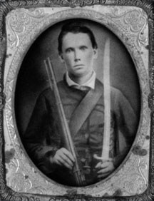

|

NAME: George Fennell Newton
BORN: 1841
DIED: 1922
ALLEGIANCE: Confederate
HIGHEST RANK: Private
UNIT: 61st Georgia Infantry, Company C "Wiregrass Rifles"
RECORD: Joined in September 1861, Company G, 26th
Georgia Infantry, which was redesignated Company C (the
"Wiregrass Rifles"), 61st Georgia Infantry. Garrison duty
along the Georgia coast, Jackson's 1862 Valley campaign,
Seven Days' Battles, Cedar Run, Second Bull Run, Antietam
(wounded), Fredericksburg, and Chancellorsville. Wounded and
captured at Gettysburg on July 1, 1863, paroled, discharged
due to wound in December 1863.
|
|
George Fennell Newton was born September 21, 1841, at his
family farm in Brooks County, Georgia, near the Florida
line. He was the eighth child overall, the third of five
sons. His father was a blacksmith and farmer who owned
between five and 10 slaves. Newton's father was killed by a
lightning bolt in 1857. Probate records reveal that he left
behind a prosperous 2,000-acre farm, a burgeoning blacksmith
shop, a widow, six slaves and several children still living
at home, ranging in age from 4 to 29.
As war commenced, Newton enlisted in Company G, 26th
Georgia Infantry, on September 7, 1861. The entire company
took the oath from Colonel C.A.L. Lamar in Quitman, Ga. The
enlistment was for three years or the duration of the war.
This unit was redesignated as Company C, 61st Georgia
Infantry, and assigned to garrison duty along the Georgia
coast. Newton was variously assigned to Brunswick, Jekyll
Island and Bethesda before April 1862. In May, his older
brother, Isaac Thomas Newton, enlisted in the same company,
known as the "Wiregrass Rifles."
By June 1862, Lawton's Georgia Brigade, to which Newton's
regiment belonged, joined Stonewall Jackson's command in the
Shenandoah Valley. From there they marched to the Seven
Days' battles around Richmond, where three of the Wiregrass
Rifles were wounded. Isaac Thomas Newton was left behind at
the Lynchburg Girls Seminary Hospital due to illness. He
died on June 19, 1862, and is buried there. The Wiregrass
Rifles went on to fight at Cedar Run and Second Bull Run,
where one member of the company was killed and eight
wounded. At Sharpsburg, the Wiregrass Rifles were part of
the fighting in the Cornfield; four men were killed and 14
were wounded, including Newton, who received a flesh wound
to the right buttock. The Wiregrass Rifles were in line with
Colonel Edmund Atkinson's counterattack at Fredericksburg,
driving back Maj. Gen. George G. Meade's division. At
Chancellorsville, the Wiregrass Rifles helped to pin the
main body of the Union forces before Fredericksburg while
other Confederate units maneuvered around General Joseph
Hooker's flank. Four men from the company were wounded as it
fought to expel the Federals from Marye's Heights and push
them across the Rappahannock on May 5, 1863.
In early June Newton marched with his company to
Winchester, Va., then Williamsport, Md., crossing the
Potomac at Shepherdstown, in the newly created state of West
Virginia, on June 20. They marched to Cashtown, Pa., then
Gettysburg to Wrightsville, where retreating Union forces
burned the Susquehanna River railroad bridge. Ultimately,
the town was threatened by the fire. Newton's brigade fought
the fire in the town, and is mentioned on a monument erected
there by Wrightsville civilians in thanks to these Rebel
soldiers.
At Gettysburg, the 61st Georgia was part of Gordon's
Brigade. On the first day's battle during the Confederate
push from Rock Creek toward the county almshouse, Newton
received a gunshot wound to the left forearm. He surrendered
to Union soldiers in order to obtain treatment for his wound
and endured a total of three amputations, as gangrene twice
appeared. Ultimately his left arm extended only about two
inches above the elbow. Newton signed a parole and returned
to his home in Georgia. By Christmas 1863, he had been
discharged from the Confederate Army on account of his
wounds.
Newton died of pneumonia in 1922, after serving as tax
receiver, sheriff and state legislator for several terms. He
fathered 10 children and left behind a 9,900-acre farm. He
was an active man to the end--at the time of his death. he
owned a new Dort automobile.
Source: Civil War Times Illustrated
45:3 (May 2006), 12.
|